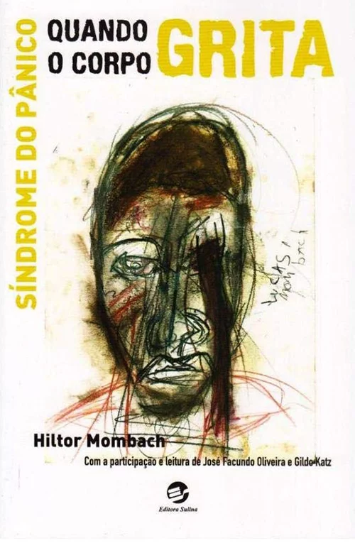
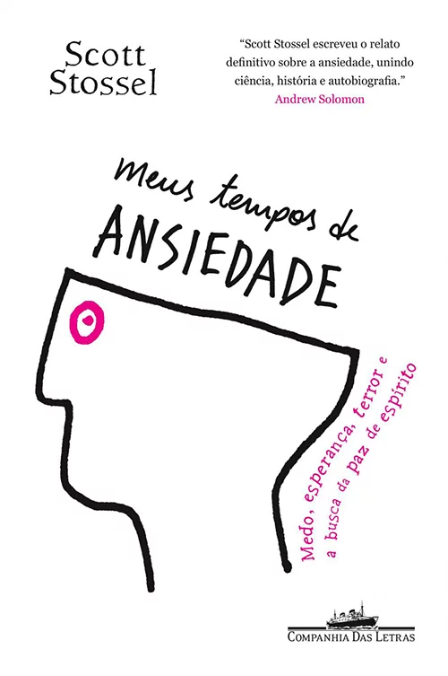
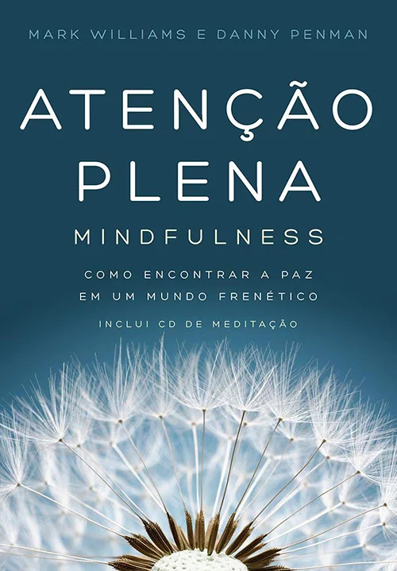
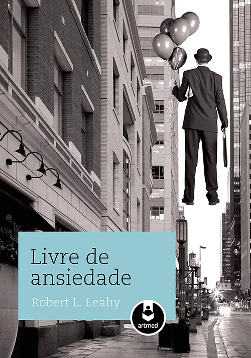
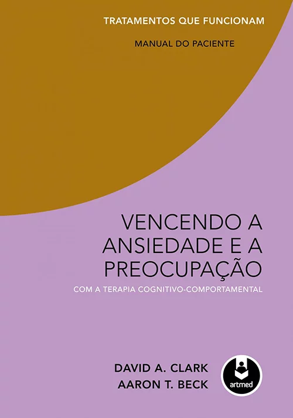

Biblioteca Breathe
Está pagina etá reservada para indicações de livros e guias de auto-ajuda na nossa biblioteca virtual disponivel aos nossos usuários.
Meditação para Céticos Ansiosos (2019), de Dan Harris e Jeff Warren

Após sofrer um ataque de pânico ao vivo na TV, diante dos milhões de espectadores que assistiam a seu programa na rede ABC News, Dan Harris se tornou um ávido meditador – e, segundo sua esposa, uma pessoa muito menos irritante. Então, ele decidiu se juntar a Jeff Warren, um professor de meditação, para ensinar como driblar os obstáculos mais comuns na hora de estabelecer uma rotina para meditar. Com uma linguagem divertida e irreverente, “Meditação para Céticos Ansiosos” é um guia completo para iniciantes, derrubando os principais mitos e equívocos que cercam a meditação.
Quando o Corpo Grita: Síndrome do Pânico (2017), de Hiltor Mombach
Em 1991, o jornalista Hiltor Mombach foi tomado por um pavor indescritível. Peregrinou por consultórios médicos, realizou vários exames do coração e nada. Não havia um diagnóstico. Por meio de sua esposa, Judith Vergara, soube que poderia estar sofrendo de síndrome do pânico. Um psiquiatra confirmou o diagnóstico. Começou ali um processo de convivência com a doença que se estende até os dias atuais. As sessões de terapia foram decisivas na compreensão da síndrome. Este livro traz o relato da descoberta da doença, seu tratamento e as formas de como é possível, em alguns casos, prevenir a crise.
Silêncio: Na Era do Ruído (2017), de Erling Kagge
Esta é uma viagem filosófica sobre a importância do silêncio. Com o barulho do trânsito, dos celulares, das pessoas ao redor e dos nossos próprios pensamentos, a quietude parece algo inalcançável. A partir de sua experiência pessoal e das ideias de sociólogos, escritores e artistas clássicos e contemporâneos, o explorador e escritor norueguês Erling Kagge reflete sobre a importância de trancar o mundo do lado de fora. Segundo ele, silêncio não significa necessariamente ausência de ruído, e sim um recurso que está ao alcance de todos nós, em qualquer lugar: no meio do deserto e do polo sul, mas também no chuveiro ou na pista de dança.
Meus Tempos de Ansiedade: Medo, Esperança, Terror e a Busca da Paz de Espírito (2014), de Scott Stossel
No dia de seu casamento, Scott Stossel viveu os momentos mais aterrorizantes de sua vida. Tudo aconteceu nos conformes, exceto pelo fato de que ele passou a cerimônia tremendo de pavor e encharcado de suor. Na noite que deveria ser a mais importante e especial de sua vida, ele só pensava na morte, em desaparecer. A partir de sua própria vivência da ansiedade, o editor da revista “Atlantic” investiga essa doença que, se não existia como categoria diagnóstica 35 anos atrás, hoje é o mais comum distúrbio mental. Entre o relato íntimo e teorias científicas, o autor oferece uma história de todas as perspectivas, da médica à filosófica.
Atenção Plena: Mindfulness (2011), de Mark Williams e Danny Penman

“Atenção Plena: Mindfulness” e os áudios de meditação disponibilizados junto com o livro apresentam uma série de práticas simples para expandir a consciência e quebrar o ciclo de ansiedade, estresse, infelicidade e exaustão. Recomendado pelo Instituto Nacional de Excelência Clínica do Reino Unido, este método ajuda o leitor a encontrar a tranquilidade, permitindo que ele enfrente os desafios da vida com uma coragem renovada. Mais do que uma técnica de meditação, a atenção plena (ou mindfulness) é um estilo de vida que consiste em estar aberto à experiência presente, observando seus pensamentos sem julgamentos. Ao todo, são oito semanas com exercícios e meditações diárias.
Livre de Ansiedade (2011), de Robert L. Leahy

Esta obra investiga as origens da ansiedade e ensina como levar uma vida menos estressante. Utilizando os métodos propostos pelo autor, baseados nos melhores tratamentos psicológicos disponíveis, o leitor pode conquistar uma vida livre de apreensão e tensão relacionadas à ansiedade. Robert L. Leahy é um dos mais respeitados terapeutas cognitivos do mundo. O autor traz para este livro o conhecimento acumulado de 25 anos de trabalho, durante os quais ajudou as pessoas a superarem a ansiedade. Leahy é diretor do American Institute of Cognitive Therapies e presidente da International Association for Behavioral and Cognitive Therapies e da Academy of Cognitive Therapy.
Rápido e Devagar: Duas Formas de Pensar (2011), de Daniel Kahneman

Neste livro, o ganhador do Prêmio Nobel de Economia, Daniel Kahneman, reúne suas conclusões tiradas ao longo de muitos anos de pesquisa sobre a mente humana. Contrapondo a ideia de que a nossa tomada de decisões é essencialmente racional, ele explica as duas formas pelas quais o pensamento humano se desenvolve: uma é rápida, intuitiva e emocional; enquanto a outra é mais lenta, deliberativa e lógica. Kahneman expõe as capacidades extraordinárias do pensamento rápido e revela o peso da intuição no processo de tomada de decisões. Além disso, o autor oferece insights esclarecedores sobre as escolhas nos negócios e na vida pessoal, e mostra diferentes técnicas que podem ser usadas contra as falhas mentais que, muitas vezes, nos colocam em situações difíceis.
Vencendo a Ansiedade e a Preocupação Com a Terapia Cognitivo-Comportamental (2009), de David A. Clark e Aaron T. Beck

Este é um manual voltado ao paciente e apresenta estratégias práticas para identificar gatilhos de ansiedade, desafiar os pensamentos e crenças que levam à angústia, enfrentar com segurança as situações temidas, e afrouxar as garras da ansiedade. Ele se baseia na terapia cognitivo-comportamental, abordagem terapêutica desenvolvida e testada há mais de 50 anos pelo pesquisador-clínico Aaron T. Beck, um dos autores. Dr. Beck é professor de psiquiatria na Universidade da Pensilvânia e presidente do Instituto Beck de Terapia Cognitivo-Comportamental. Juntamente ao pesquisador, participa do manual o dr. David A. Clark, professor de Psicologia da Universidade de New Brunswick, no Canadá, e fundador da Academy of Cognitive Therapy.